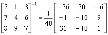

三階伴隨矩陣/逆矩陣及行列式(另一版本)
程式編寫日期: 2006年3月16日
程式需要在 REG Quad 模式下執行，因此在輸入程式前請先按 Mode Mode 2 → 3 進入REG Quad模式。
注意: 藍色的英文字為統計模式中的變數(Σx3 按 Shift 1 → → 1，Σy 按 Shift 1 → 2)，而3√是按shift x3。
程式(121 bytes)
Stat clear: ?→Y: ?→M: 3√ Y , M DT: ?→A: ?→B: ?→C: ?→D:
?→X: ?→Y: ?→M: Σx3CM + BYA + XΣyD - XCA - BΣyM - Σx3YD◢
CM - DY◢ AY - ΣyM◢ ΣyD - AC◢ DX - BM◢ Σx3M - AX◢
AB - Σx3D◢ BY - CX◢ ΣyX - Σx3Y◢ Σx3C - ΣyB
註: 第一個數值不可以直接輸入分數，否則可能出現MATH ERROR，若要輸入分數，請用除號代替分號，若果希望第一個數值都可以輸入分數，請將程式近開始的"?→Y:?→M: 3√Y, M DT:" 改為 "?→M: M:?→M:3√Ans , M DT:"即可。
例題: 計算下列矩陣的伴隨矩陣及逆矩陣。
按 Prog 1 再按 2 EXE 1 EXE 3 EXE 7 EXE 4 EXE 6 EXE
8 EXE 9 EXE 7 EXE (顯示行列式的值為40)
EXE (顯示 -26) EXE (顯示 20) EXE (顯示 -6)
EXE (顯示 -1) EXE (顯示 -10) EXE (顯示 9)
EXE (顯示 31) EXE (顯示 -10) EXE (顯示 1)
因此，


計算完結後，請按Mode 1返回正常模式。